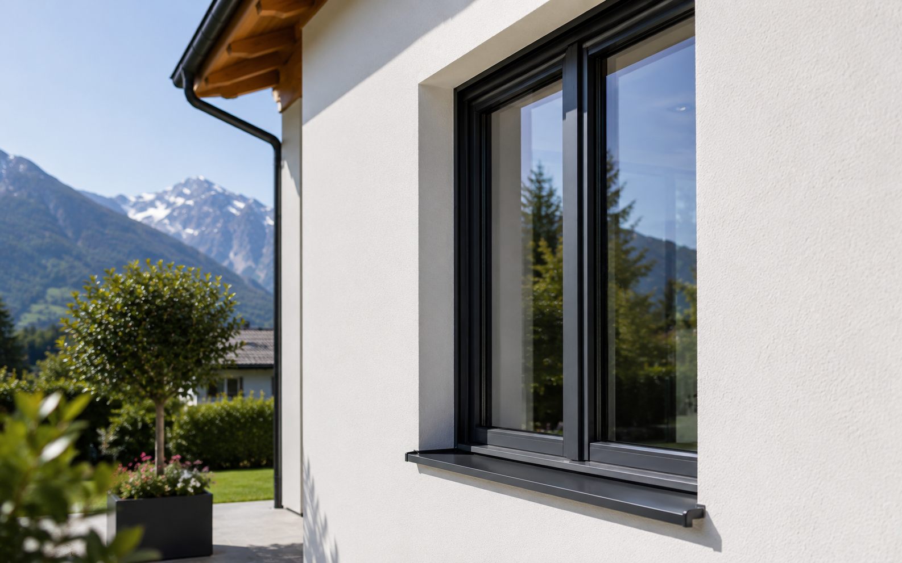

Prix, isolation, finesse des profils, entretien et rendu de façade : le vrai comparatif pour choisir sans se perdre.
Le vitrage doit être choisi selon la pièce, l'altitude, le bruit et la luminosité.
Ces valeurs aident à comprendre l'isolation, les apports solaires et la lumière naturelle.
Une bonne fenêtre mal posée perd une grande partie de son intérêt.
Matériau, vitrage, dépose, habillage et garanties doivent être lisibles sur le devis.
PVC ou aluminium, il n’y a pas un gagnant unique. Le PVC est souvent très rationnel pour les fenêtres classiques, le budget et l’isolation. L’aluminium devient plus intéressant sur les grandes baies, les profils fins, les couleurs et les façades très visibles.
Réponse directe
Pour une maison en Haute-Savoie ou en Savoie, le bon choix dépend surtout de l’ouverture. Une petite fenêtre de chambre, une baie coulissante de séjour et une porte-fenêtre exposée au vent ne demandent pas le même arbitrage.
| Besoin principal | PVC | Aluminium |
|---|---|---|
| Budget maîtrisé | Souvent le plus accessible | Généralement plus cher |
| Isolation thermique | Très bon niveau sur fenêtres classiques | Très bon aussi avec rupture de pont thermique |
| Grandes dimensions | Moins adapté selon les formats | Très pertinent pour baies et coulissants |
| Profils fins | Plus épais en général | Plus fin, plus contemporain |
| Couleurs et rendu façade | Choix plus limité selon gammes | Large choix de teintes et finitions |
| Entretien | Simple | Simple |
Quand choisir le PVC
Le PVC convient très bien pour des chambres, bureaux, petites fenêtres, fenêtres de cuisine ou pièces où l’objectif est d’obtenir un bon confort sans exploser le budget. Il est isolant, facile à entretenir et souvent très compétitif en rénovation.
Il faut simplement éviter de le choisir uniquement pour le prix. La qualité du profil, le vitrage, la quincaillerie, la pose et les finitions autour de la fenêtre font une grande partie du résultat.
Quand choisir l’aluminium
L’aluminium prend l’avantage sur les grandes ouvertures : baie vitrée, coulissant, façade moderne, grande porte-fenêtre ou maison où l’esthétique extérieure compte beaucoup. Ses profils plus fins peuvent laisser davantage de clair de jour et donner un rendu plus contemporain.
Sur les maisons exposées au froid, il faut vérifier que la menuiserie aluminium possède bien une rupture de pont thermique et que le devis indique les performances de la fenêtre complète.
Peut-on mixer PVC et aluminium ?
Oui, et c’est souvent une bonne solution. On peut choisir du PVC sur les chambres ou les ouvertures secondaires, puis de l’aluminium sur une grande baie, une façade très visible ou un accès terrasse.
La seule condition : garder une cohérence de couleur, de proportions et de finitions. Un mix mal pensé peut donner une façade décousue ; un mix bien pensé optimise le budget sans sacrifier le rendu.
Les points à comparer sur le devis
| Ligne du devis | Pourquoi c’est important |
|---|---|
| Matériau et gamme | Deux fenêtres PVC ou aluminium peuvent être très différentes selon la gamme. |
| Uw de la fenêtre complète | C’est l’indicateur thermique le plus utile pour comparer. |
| Vitrage | Double, triple, acoustique, sécurité, contrôle solaire : le choix change le confort. |
| Couleur et finition | Important pour la façade, le PLU et la copropriété. |
| Pose et habillages | Une bonne fenêtre mal posée perd une partie de son intérêt. |
| Accessoires | Oscillo-battant, seuil, poignée, sécurité, ventilation et volets doivent être clairs. |
Les erreurs fréquentes
- Comparer seulement le matériaule vitrage et la pose comptent autant que PVC ou aluminium.
- Choisir l’aluminium sans regarder le froidla rupture de pont thermique doit être confirmée.
- Choisir le PVC partout par budgetsur une grande baie, l’aluminium peut être plus confortable à long terme.
- Oublier la façadeune couleur ou un changement d’aspect peut nécessiter une vérification en mairie ou en copropriété.
Le bon arbitrage
Pour une rénovation homogène, le plus efficace est souvent de raisonner ouverture par ouverture. PVC pour les fenêtres classiques, aluminium pour les grandes baies ou les zones visibles : c’est parfois le meilleur compromis entre budget, isolation, lumière et esthétique.
À retenir : PVC ou aluminium n’est pas une question de mode. C’est un arbitrage entre budget, dimensions, rendu de façade, confort thermique et usage quotidien.
- France Rénov’ - remplacer les portes et fenêtrescette page rappelle l’importance de la performance, de la pose et de la ventilation lors du remplacement des fenêtres.
- Service-Public.fr - remplacement de fenêtres, volets ou portescette fiche précise les cas où une déclaration préalable peut être nécessaire si l’aspect extérieur change.
- Service-Public.fr - travaux en copropriétécette page rappelle les autorisations à vérifier quand les travaux modifient l’aspect extérieur ou touchent des parties communes.
- ADEME - choisir un système de ventilationl’ADEME rappelle qu’un logement rénové doit rester correctement ventilé.